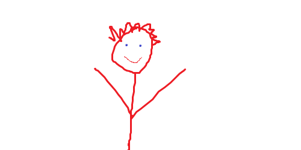

This is an example file for myframework.
passedvar; ?>
This color (rgb[1]; ?>) was calculated by Color.php.
This color (alpha[1]; ?>) with alpha was calculated by Color.php.
The following image was created in MSPaint.

The following image was edited by myframework with the following code:
$img = new Image();
$img->source('portrait.png');
$img->Write->Normal(20, 20, "A Self Portrait of Me", 5, "#000000", 1);
$img->destination('portrait2.png');
$img->output();
$img->clean();
unset($img);
more about the image library

You can use throw new RedirectBrowserException("url"); to use header('Location: url'); even after headers have been sent.
This is a session variable:
At this moment, URL.php is exclusively a .phps syntax highlighter.
I pass any url that hits my server requesting *.phps through that file so that I can serve those kinds of files.
For an example, point your browser to this demo.
The functions and their parameters of the Image library are as follows:
//places the image in the destination, or to the default output if no destination is specified
//returns boolean success or failure
bool Image->output();
//copies the image object
//returns new image object
Image Image->copy();
//checks whether the destination is set, and whether the destination file already exists
//returns false if destination isn't set, boolean whether file at destination exists
bool Image->check();
//returns a string formatted for header('Content-type:');
string Image->ContentType();
//destroys the string representation of the contained image.
//possibly very large, you should always call this when you're done
//returns true. Always.
bool Image->clean();
The functions and their parameters of the Image->Combine library are as follows:
//overlays one image on another image
//returns boolean for success/failure
boolean Image->Combine->Overlay($overimg, $destination_x, $destination_y, $source_x, $source_y, $source_width, $source_height, $alpha = 1)
Where:
$overimg is an Image object to put on TOP of the current object
$destination_x and _y is the location on the current object to place the top left corner of the overlay image
$source_x and _y is the new location of the top left corner of the overlay image (0,0 usually works well)
$source_width and _height is the amount of pixels to grab from the overlay image ($overimg->width and $overimg->height usually work well)
$alpha is how transparent the overlaid image should be, from .00 to 1.0
The functions and their parameters of the Image->Draw library are as follows:
//draws a circle
//returns boolean for success/failure
boolean Image->Draw->Circle($x, $y, $r, $color, $filled = false, $alpha = 1)
Where:
$x and $y is the location on the image to draw the center
$r is the radius of the circle
$color is the hex color of the circle
$filled is [0|1] whether the circle should be filled or not
$alpha is how transparent the circle should be, from .00 to 1.0
//draws a rectangle
//returns boolean for success/failure
boolean Image->Draw->Rectangle($x, $y, $w, $h, $color, $filled = false, $alpha = 1)
Where:
$x and $y is the location on the image to draw the center
$w and $h are the width and height, respectively, of the rectangle to draw
$color is the hex color of the rectangle
$filled is [0|1] whether the rectangle should be filled or not
$alpha is how transparent the rectangle should be, from .00 to 1.0
//draws a line
//returns boolean for success/failure
boolean Image->Draw->Line($x1, $y1, $x2, $y2, $color, $alpha = 1)
Where:
$x1 and $y1 is the location on the image to draw the line FROM
$x2 and $y2 is the location on the image to draw the line TO
$color is the hex color of the line
$alpha is how transparent the line should be, from .00 to 1.0
The functions and their parameters of the Image->Manipulate library are as follows:
//resizes an image
//returns boolean for success/failure
boolean Image->Manipulate->Resize($newWidth, $newHeight, $stretch = true)
Where:
$newWidth and $newHeight is the intended resulting image size.
$stretch determines the actual output.
If true, the source image is compressed to fit in the dimensions specified.
If false, the largest dimension will be determined, and the image will be scaled so that that dimension matches
//scales an image
//returns boolean for success/failure
boolean Image->Manipulate->Scale($percent)
Where:
$percent is a number >= 1 to scale the image to. Numbers larger than 100 require a fairly significant about of memory.
Numbers larger than 1000 are utterly insane
//crops an image
//returns boolean for success/failure
boolean Image->Manipulate->Crop($top, $right, $bottom, $left)
Where:
The parameters are how much to REMOVE from their respective sides (how many pixels IN should the edge be placed).
//rotates an image
//returns boolean for success/failure
boolean Image->Manipulate->Rotate($angle)
Where:
$angle is the number of degrees to rotate the image around it's center counter-clockwise (anti-clockwise).
The functions and their parameters of the Image->Write library are as follows:
//Writes text in system font
//returns boolean for success/failure
boolean Image->Write->Normal($x, $y, $string, $size, $color, $alpha = 1, $vert = false)
Where:
$x and $y are the location on the image to place the top left corner of the text.
$string is the text to place.
$size is the font size between 1 and 5.
$color is the hex color for the text
$alpha is the transparency of the text between .00 and 1.0
$vert is the boolean [0|1]|[true|false] for whether to write the text vertically or not
///Writes text in any TrueType font
//returns boolean for success/failure
boolean Image->Write->Font($x, $y, $string, $textSize, $color, $angle, $font, $alpha = 1, $bg = "#000000", $bgA = 0, $padding = 0)
Where:
$x and $y are the location on the image to place the top left corner of the text.
$string is the text to place.
$textSize is the font size in points.
$color is the hex color for the text.
$angle is the angle in degrees counter-clockwise to write the text.
$font is the location on disk of the font file.
$alpha is the transparency of the text between .00 and 1.0
$bg is the hex color of the optional background box for the text.
$bgA is the alpha transparency between .00 and 1.0 of the optional background box for the text.
$padding is the optional amount that the background box is distanced from the text.